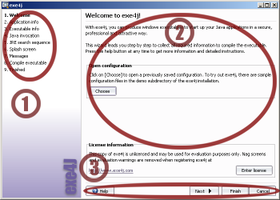

|
When invoking exe4j from the start menu, the desktop icon or by executing
bin\exe4j.exe in the exe4j installation directory, the exe4j wizard
is started. It guides you step by step through completing the required information
for building the executable.
The window of the wizard has three distinct areas:

-
(1) Index
The index of steps lists all steps of the wizard and highlights the current
step in bold face. You can click on any step in the index to arbitrarily move
between wizard steps. Alternatively, you can use the navigation controls
(see below).
-
(2) Current step
The information for the current step is entered here. See the
help pages for each step for specific
information.
-
(3) Navigation
The navigation bar allows you to move back and forward through the
steps of the wizard with the [Next] and
[Previous] buttons. The [Finish]
button allows you to complete the wizard immediately without
moving through the remaining steps. Should any required information
be missing, the wizard will alert you to it. The [Help]
button shows context specific help that is also available by pressing
F1. With the [Cancel] button you can leave the wizard
at any time. Should you have made modifications to the configuration, you
will be asked whether you want to save your changes before the wizard exits.
|